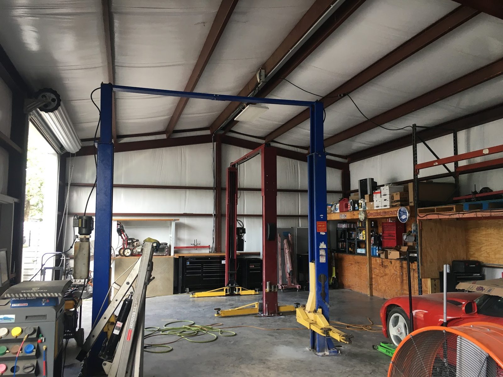

Multi-point inspection
Austin, TX
- Checked
- Watch
- Fix now
Auto repair · Hudson Bend, Austin
Honest repairs, explained plainly
Right diagnosis. Fair price. No work you do not need.

- Shop
- AO Amigos Auto Service
- Rating
- 4.8/ 5
- Signed off by
- 209Google reviews
- Call
- (512) 545-8271
- Engine diagnostics
- Brakes
- A/C repair
- Transmission
- Roadside help
- Body work
Systems we check
What we fix
Most makes and models: domestic, import, classics and trucks.
- Checked
- Watch
- Fix now
-

Engine diagnostics & repair
We track down problems other shops could not pin down.
- Engine diagnostics and repair
- Electrical system repairs
- Oil changes
-

Brakes, suspension & steering
Brake repair and replacement, plus the parts that hold the car on the road.
- Brake repair and replacement
- Suspension and steering
-

A/C & cooling
Cold air back and the cooling system checked.
- AC diagnosis and repair
- Cooling system service
-

Transmission, starting & charging
From transmission service to the battery, starter and alternator.
- Transmission service and replacement
- Alternator and starter replacement
- Battery service
-

Tires & wheels
Flat tires and tire work handled at the shop.
- Tire repair
- Tire replacement
- Flat tire service
-

Body work & roadside help
Body repair and paint, plus help for drivers stranded near the lake.
- Body repair
- Paint work
- Roadside assistance
- Lockout service
What we found, what we fixed
See the part, then the repair
Found Fix now
Fixed Checked
The record
- 4.8Google rating
- 209Google reviews
- Mon–Sat8 AM to 6 PM
Signed off
Kind words
4.8 / 5 from 209 Google reviews
Note
I brought my RAV4 to A0 Amigos in Hudson Bend for a water pump replacement, and I couldn’t be happier with the experience. These guys are the real deal, honest, skilled, and genuinely committed to taking care of their customers.From the moment I pulled in, the team was welcoming and professional.
Note
⭐⭐⭐⭐⭐ Phenomenal, Honest Service! I brought my 2019 Nissan Altima to AO Amigos Auto Service today because my A/C was acting up, and I couldn't be happier with the experience. They were incredibly welcoming, transparent, and professional right from the start. What impressed me most was how accommodating and respectful they were about working around my vehicle's specific setup.
Note
I had a great experience with this shop and especially with Ortuno, the owner. He was willing to work with me, honored the pricing we discussed, and stayed committed to the job until everything was done right. Communication was strong throughout the process, and Ortuno made sure I always knew what was happening.
Note
Great mechanic. I finally found one, Orturo, that doesn't charge you for things that really don't get done. They diagnosed and fixed the issue without just being a parts changer. Two other places put in parts and the issue later showed back up in a day or two. Now a week later Amigos repair for 1/3 the cost is still doing great. High recommend.
Note
Very knowledgeable and technical guy. I always go to this mechanic shop for all of my vehicles. His diagnosis are right on spot and priced reasonable. I would definitely recommend him.

The shop
Paz and the crew
AO Amigos Auto Service is owned and operated by Aureliano "Paz" Ortuño. The idea is simple: treat people right and do the job well.
The shop explains what is wrong in plain language, offers options when a decision has to be made and does not push repairs you do not need.
Problems other shops could not pin down get solved here. Service is in English and Spanish.
- HonestyWhat is wrong and what it will cost, up front.
- QualityRepairs done right the first time.
- RespectEvery customer treated with kindness.


Find us
Find the shop on Doss Rd
4538 Doss Rd, Austin, TX 78734
4538 Doss Rd in Hudson Bend, open Monday to Saturday, 8 AM to 6 PM.